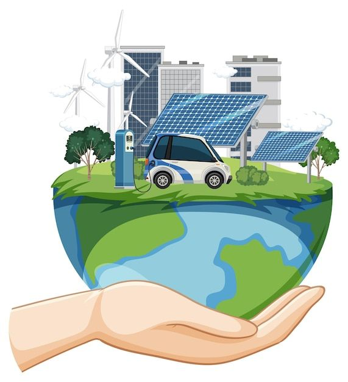

Solutions for global warming
Electric Vehicles

The use of electric vehicles (EVs) is a key solution to combat global warming by reducing
greenhouse gas emissions from the transportation sector. Unlike traditional gasoline or diesel-powered cars,
EVs run on electricity, producing zero tailpipe emissions. When powered by renewable energy sources like
solar or wind, their environmental impact is drastically minimized. EVs help decrease dependence on fossil
fuels, improve air quality, and contribute to a sustainable, low-carbon future. As battery technology and
charging infrastructure improve, the widespread adoption of EVs can play a major role in slowing climate
change.
Afforestation
Afforestation, the process of planting trees in areas that were not previously forested,
is a powerful natural solution to global warming. Trees absorb carbon dioxide (CO₂) from the atmosphere
through photosynthesis, storing it in their trunks, branches, and roots. Large-scale tree planting
initiatives can play a vital role in offsetting emissions, slowing climate change, and building climate
resilience for future generations.
Use of organic fertilizers
The use of organic fertilizers is a sustainable agricultural practice that helps reduce
global warming. Unlike synthetic fertilizers, which are energy-intensive to produce and release high levels
of nitrous oxide potent greenhouse gas organic fertilizers such as compost, manure, and biofertilizers
have a lower carbon footprint. They enrich the soil naturally, enhancing its ability to store carbon and
support microbial life. By improving soil health and reducing the need for chemical inputs, organic
fertilizers contribute to lower greenhouse gas emissions and promote long-term climate resilience in
agriculture.
Use of sustainable energy
Sustainable energy such as solar, wind, hydro, and geothermal plays a crucial role in reducing the
effects of global warming. By replacing fossil fuels, it significantly cuts carbon dioxide and methane
emissions, which are the main drivers of climate change. Unlike coal or oil, sustainable energy sources are
clean, renewable, and virtually unlimited. Widespread adoption of sustainable energy reduces air pollution,
lowers global temperatures, and promotes long-term energy security. Transitioning to sustainable energy is
one of the most effective ways to combat global warming and protect the planet for future generations.